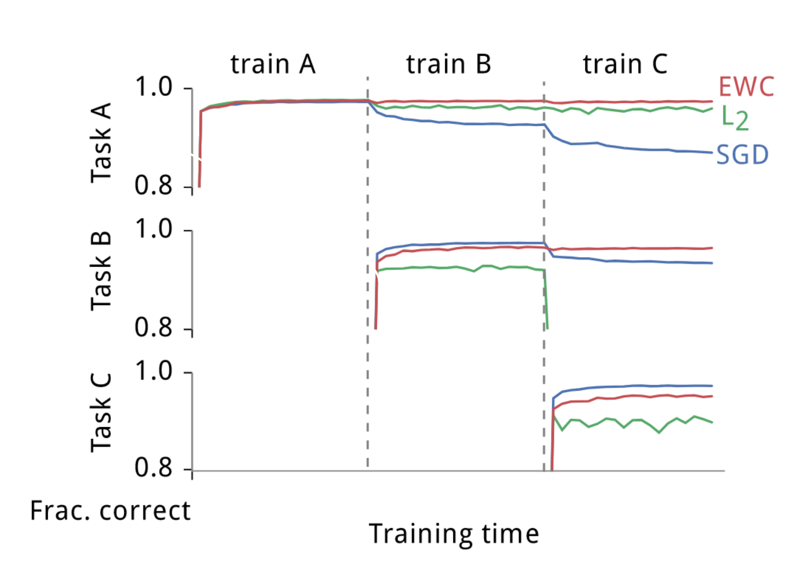

The metrics in machine learning are sometimes confusing, not to mention that in continual learning with sequential tasks. Here is a note for understanding all the metrics in continual learning.
The metrics are generally divided into two categories:
Real-time Monitor Metrics:
- They are used to monitor the performance and state of the model in real-time during training.
- They are usually to be logged to loggers like TensorBoard in real time for monitoring and identifying issues.
Metrics for Calculation:
- They are typically calculated after model training, such as validating and testing.
- They help understand the model’s performance. In other words, a fixed model is usually our object to measure.
As for continual learning, it is actually an extension to normal machine learning. We start with the metrics for one task and then for the metrics over tasks.
Metrics for Current Task \(t\)
For the time of dealing with task \(t\), continual learning model focuses on how it performs on task \(t\). In this case, the metrics are basically nothing special from normal machine learning.
Monitor: Training Batch Loss / Accuracy
In training task \(t\), it is an important message for how well the model performs on current batch of data.
The loss of the batch is really handy to get as it’s needed for the backpropagation process. Basically every machine learning project takes it as the primary monitor shown in progress bar or dashboard or something.
It is a good indicator for monitoring:
- Tell overfitting or underfitting from convergence behavior;
- Tell if the learning rate too high or low;
- The monitor to implement early stopping if you want it deployed in your project.
It doesn’t matter that the loss and accuracy are calculated from different batch, as the data batch is often shuffled and evenly distributed. Even if it’s not the case, they are a practical just for monitoring and getting a rough idea about the model in real time anyway.
Print or log after you get the loss variable calculated in every batch.
Sometimes the accuracy of a batch is also monitored because it is more intuitive than the loss to show the performance. It might introduce some extra calculation but very little.
- The loss is typically referred to as classification loss (cross-entropy). Sometimes there are regularization terms as well, which we can also monitor.
- The concept of accuracy is only for classification. For other tasks like regression, there are like MSE or something else.
Monitor: Cumulative Averages
Cumulative averages over batches are often used instead of the immediate batch-specific metrics. They have advantages that the curves are smoothed and the overall training process is monitored.
Reset the cumulative counter at the start of each epoch. It makes it possible that the observation and comparison of changes between epochs, which is essential to plot learning curves.
Use Torchmetrics.
Calculation: Validation Loss / Accuracy
The validation process is to test the model trained so far during the training process without using the testing data. Apart from showing generalisation information, it offers a monitor for selecting the best model among the checkpoints during training.
The validation usually takes place after each epoch training, because that marks a milestone for the training process. Theoretically it could be after each batch training, but costs too much as it goes through a complete validation dataset.
As the validation dataset is large enough (usually above 10% split from training dataset), the validation process has to be done with batches. Monitoring the batch loss / accuracy makes no sense because all we want is a result. Therefore, the validation loss / accuracy are cumulative averages only for calculation.
Use Torchmetrics.
Monitor: Learning Curves
We’ve got the validation loss in the validation process after (let’s say) each epoch, which represents the performance of the trained model after the epoch, on validation dataset.
We’ve got the cumulative average training loss after each epoch, which represents the average performance of a series of models during the training process, on training dataset.
They are slightly different but we can still put them together to make a meaningful comparison. If we plot them epoch-wise, that’s what we call as learning curves. This is basically a rougher (updated each epoch) monitor than batch loss curve, but incorporating validation information which additionally shows the generalisation ability of the model.
We could plot learning curves batch-wise, but just as I said, it costs too much to validate after each batch of training.
Calculation: Testing Loss / Accuracy
The testing process is to test the model after all the training and validating done using the testing data. It is a one-off thing and all we want is just a number.
As the testing dataset is large enough, the testing process has to be done with batches. Monitoring the batch loss / accuracy makes no sense because all we want is a result. Therefore, the testing loss / accuracy are cumulative averages only for calculation.
Use Torchmetrics.
As this is only one value, use add_text in TensorBoard to prevent plotting curves with one point.
In some occasions, the model is tested on testing dataset after every training epoch or even batch. However, this breaks the rules of testing, so it is only used as illustrations in God’s eyes view instead of part of the testing procedure. Also be aware that it costs a lot.
Metrics for Previous Tasks
Continual learning not only focuses on the performance on current task \(t\), but also on previous tasks \(1,\cdots, t-1\).
Let \(a_{\tau, t}\) denote the accuracy of the test model on task \(\tau\) testing dataset after learning task \(t\). \(a_{t,t}\) is then the testing accuracy above for current accuracy. \(a_{\tau, t}\ (\tau < t)\) is also handy to be calculated as long as the task \(\tau\) testing dataset can be accessed.
The testing process of task \(t\) becomes testing task \(1,2,...,t\) instead of \(t\) alone. It forms upper triangular matrix of metrics \(a_{\tau, t}\ (\tau \leq t)\):
\[ \begin{array}{cccc} a_{1,1} & a_{1,2} & a_{1,3} & \cdots \\ & a_{2,2} & a_{2,3} & \cdots \\ & & a_{3,3} & \cdots \\ \vdots & \vdots & \vdots & \ddots \\ \end{array} \]
In some occasions, the model is tested on previous tasks testing datasets after every training epoch or even batch. However, this breaks the rules of testing, so it is only used as illustrations in God’s eyes view instead of part of the testing procedure. Also be aware that it costs a lot. It forms a upper triangular matrix of learning curves (the example from EWC paper):

Metrics Over Tasks
Based on the metrics for previous tasks \(1,\cdots,t-1\) and current task \(t\), we can now calculate the metrics over tasks which represent the overall performance of continual learning.
The overall metrics are calculated from the upper triangular matrix of metrics \(a_{\tau, t}\ (\tau \leq t)\) and the following metrics:
- \(a^J_{\tau, t}\): the accuracy on dataset \(D^t\) of a randomly-initialized reference model jointly trained on \(\cup_{\tau=1}^t D^\tau\);
- \(a^I_\tau\): the accuracy of a randomly-initialized reference model independently trained on \(D^\tau\);
- \(a^R_\tau\): the accuracy of a random stratified model.
Average Accuracy (AA):the main performance metric
\[\mathrm{AA}_t=\frac{1}{t} \sum_{\tau=1}^t a_{\tau, t}\]
Forgetting Ratio (FR): a performance metric
\[ \mathrm{FR}_t=\frac{1}{t} \sum_{\tau=1}^t \frac{a_{\tau, t}-a^R_{\tau}}{a^J_{\tau, t}-a^R_{\tau}} - 1 \]
Backward Transfer (BWT): metric measuring stability in the stability-plasticity trade-off
\[ \mathrm{BWT}_t=\frac{1}{t-1} \sum_{\tau=1}^{t-1}\left(a_{\tau, t}-a_{\tau, \tau}\right) \]
Forward Transfer (FWT): metric measuring plasticity in the stability-plasticity trade-off
\[ \mathrm{FWT}_t=\frac{1}{t-1} \sum_{\tau=2}^t\left(a_{\tau, \tau}-a^I_\tau\right) \]